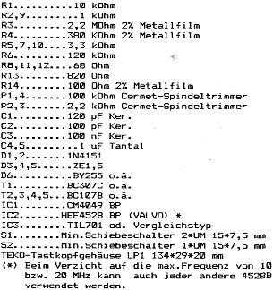
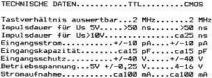

80-Bus Journal |
Juli/Aug./September 1984 · Ausgabe 3 |
Der hier vorgestellte Digitale Taster hat sich bei der Fehlersuche in TTL – und CMOS – Schaltungen als unentbehrliches Hilfsmittel bestens bewährt und zeichnet sich durch die folgenden Eigenschaften aus:
| 1. | Eindeutige Beurteilung der logischen Zustände anhand einer quasi-oszilloskopischen Anzeige. |
| 2. | Umschaltbar für TTL-und CMOS-Pegel. |
| 3. | Einschaltbarer Impulsspeicher. |
| 4. | Tastverhältnisse bei Rechteckimpulsen abschätzbar. |
| 5. | Schutz gegen Verpolung. |
| 6. | Völlig unkritischer Nachbau mit nur geringen Kosten. |
Als Indikator wird eine 7-Segment-Anzeige verwendet, deren Punkt die Betriebsbereitschaft anzeigt. Das „e“ Segment symbolisiert einen H-Pegel und das „d“ Segment einen L-Pegel. Das Impulssegment „g“ leuchtet immer dann auf, wenn der Pegel von High nach Low oder umgekehrt wechselt. Bei Nadelimpulsen, die von High nach Low gehen leuchten die Segmente „e“ und „g“. Bei Nadelimpulsen, die von Low nach High gehen leuchten die Segmente „b“ und „g“. Bei Rechteckimpulsen brennen alle 3 Segmente.
Bei unsymmetrischen Rechteckimpulsen entspricht die Helligkeit der Segmente „e“ und „b“ dem Tastverhältnis der Impulse und kann bis zu 2MHz optisch ausgewertet werden. Bei offenem Eingang oder im verbotenen Pegelbereich bleibt die Anzeige dunkel. Die Schaltschwellen für High und Low, können in den Stellungen „TTL“ und „CMOS“ ganz individuell mit 4 Spindeltrimmern getrennt eingestellt werden und damit den eigenen Bedürfnissen in weiten Grenzen angepasst werden. Eine Hysteresis tritt bei den Schaltschwellen nicht auf.
Durch Einschalten von S2 wird ein einmalig auftretender Impuls „eingefangen“ (z.B.Interruptfalle) und mit dem „g“ Segment angezeigt. Durch Umschalten von S2 wird das Speichel-Flip-Flop wieder zurückgesetzt und der Taster ist für das nächste Einfangen eines Impulses bereit.
Die Leistungsfähigkeit des Verpolungsschutzes ist nur durch die Strombelastung der Diode 6 begrenzt.
Einen Tip noch zum Einbau der 7-Segment-Anzeige: Von einem 20 bis 40 poligen DIL-Sockel, der recht hoch sein sollte, schneidet man 5 Doppelpins ab und setzt die Anzeige dort hinein. Damit bekommt diese einen bündigen Abschluss mit dem Gehäusedeckel des Tastkopfes. Alle Bauteile sind handelsüblich. Das Teko-Gehäuse LP1 ist bei der Fa. Dahms Elektronik in Viernheim erhältlich. Dem 80-Bus-Journal stelle ich mein Platienenlayout zur Verfügung.
Georg Assmann


| Seite 23 von 52 |
|---|